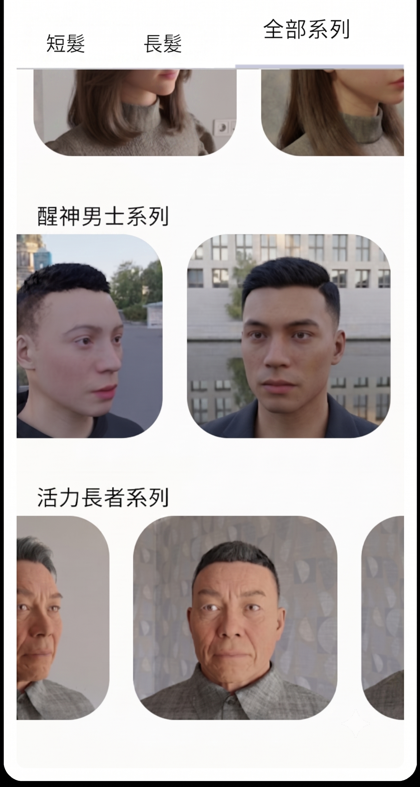
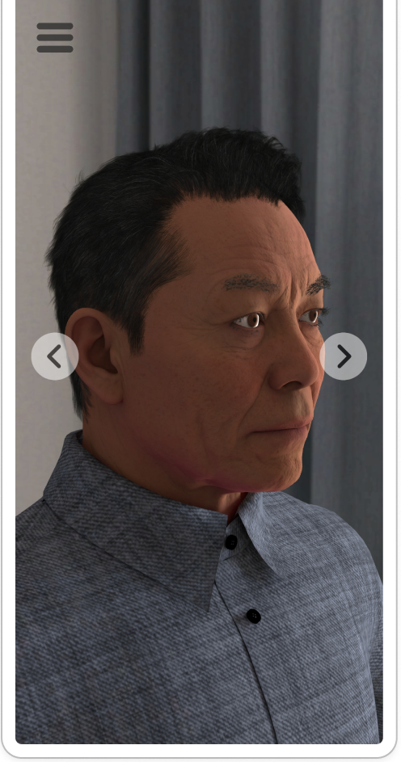
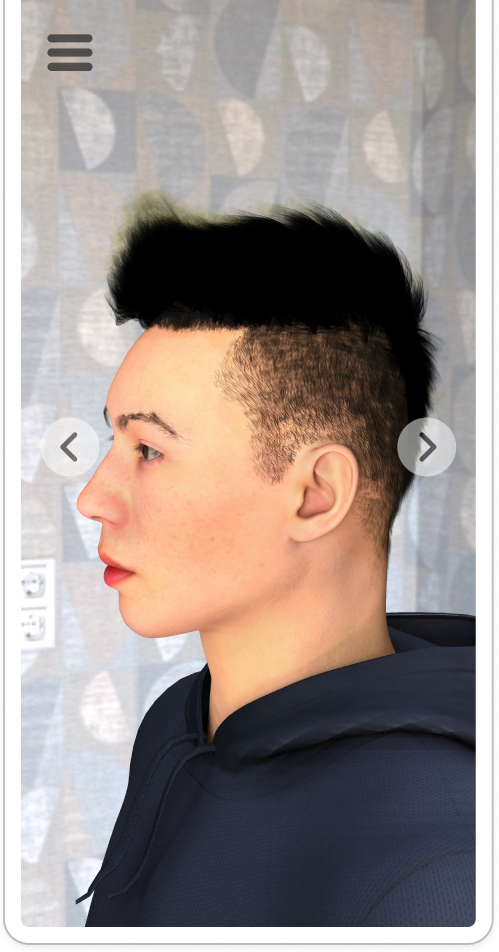

1. Physical-Digital Integration: 3D Hairstyle Interactive Showcase and Salon Experience App
Business Background and Problem Discovery
In salon operations, clients struggled to visualize volume and layering from flat 2D catalogs, causing hesitation and prolonged consultations before haircuts.
Product Goals and Scope
As Product Engineer and Co-Founder, I set out to build a lightweight 3D hairstyle preview application in Unity C# from scratch, connect it to Google Cloud Storage for over-the-air asset streaming, and deploy it on dedicated in-store Android tablets to eliminate consultation ambiguity.
Frontline Insights, Continuous Data Tracking, and Product Iteration
- Curious Floor Observation: Spent time on the salon floor observing consultations directly, discovering that children (ages 6 to 12) and teenagers were the most enthusiastic users, and reprioritized the asset pipeline to launch dedicated youth 3D collections.
- Daily Stylist Feedback Loop: Instituted daily tracking logs where stylists recorded client style selections and consultation satisfaction to guide ongoing 3D model tuning.
- Unity URP Architecture & CI/CD Streaming: Built the mobile client in Unity C# using the Universal Render Pipeline (URP), establishing CI/CD automated release pipelines and Google Cloud Storage OTA asset streaming to deploy continuous updates without manual station-by-station app reinstalls.



Product Impact and Practical Outcomes
Deployed dedicated tablets across styling stations, turning haircut consultations into an interactive 360-degree preview. Anchoring digital asset iteration in daily stylist logs established a closed feedback loop between software delivery and salon floor operations.
Key Takeaways and Continuous Learning
Staying humble before actual user behavior and learning through daily operational feedback. By spending time on the salon floor and teaching myself Unity C#, I learned that product development is an ongoing learning practice, where listening to frontline staff and iteratively tuning assets produces far better outcomes than rigid planning.